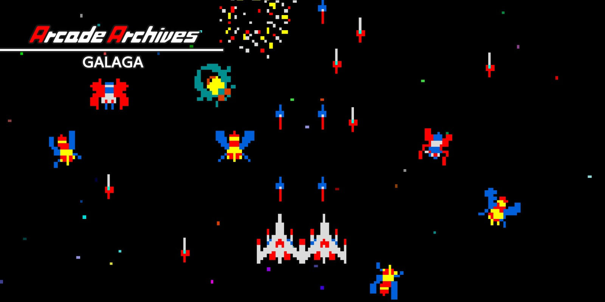

Galaga tiene ya más de 40 años desde su lanzamiento original en 198A pesar de su antigüedad, sigue siendo un juego muy popular y querido por los fanáticos de los juegos retro y los amantes de los arcades. Su jugabilidad sencilla pero adictiva, junto con su diseño visual atractivo, lo convierten en un juego atemporal que sigue siendo disfrutado por jugadores de todas las edades
